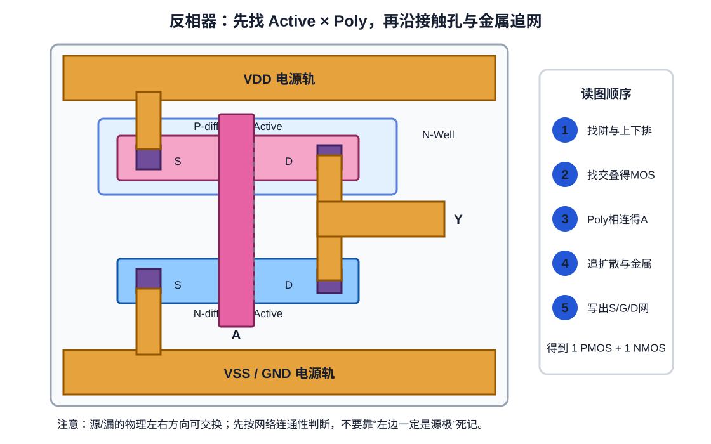

第 4 章 反相器完整读图实验
让同一个电路依次经过真值表、网表、stick diagram 和版图
本章目标
- 能从零构造 CMOS 反相器，而不是只认一张固定版图。
- 能从版图反向写出二管 SPICE 网表，并检查每个端子网络。
- 理解稳态功能正确之外，还需检查切换、电容、体连接和制造规则。
4.1 第一步：固定逻辑与网络名字
反相器只有一个输入 A、一个输出 Y、电源 VDD 与地 VSS：
| A | 应该连通的路径 | Y |
|---|---|---|
| 0 | VDD → PMOS → Y | 1 |
| 1 | Y → NMOS → VSS | 0 |
由此得到：PMOS 与 NMOS 的栅都接 A；两管一侧共同连接 Y；PMOS 另一侧接 VDD，NMOS 另一侧接 VSS。
4.2 第二步：写出可检查的 SPICE
.subckt INVX1 A Y VDD VSS
* D G S B model geometry
MP0 Y A VDD VDD pmos W=1u L=0.15u
MN0 Y A VSS VSS nmos W=0.5u L=0.15u
.ends INVX1MOS 行常见的端子顺序是 D G S B，但导入任何网表前仍要查看该工具/PDK 的语法约定。上面的 W/L 只用于展示语法，不是任何工艺的推荐尺寸。
本地 LibreCell 的特殊约定：提交
f708e3a 中，模型名以字母 n 开头就被识别为 NMOS，其余被识别为 PMOS。这意味着某些 foundry 的完整模型名可能被误分类；迁移时不能只把模型名原样替换进网表。4.3 第三步：先画 stick diagram
Stick diagram 只表达拓扑和相对位置，不表达精确宽度、间距或 enclosure。先用它决定“哪里共享、哪条线跨过哪里”，再由技术规则生成几何。
VDD rail
│ contact
P-active VDD ─[ gate A ]─ Y
│ M1 output
N-active VSS ─[ gate A ]─ Y
│ contact
VSS rail
同一条 gate A 穿过上下两行；上下两个 Y 扩散用金属相连。这一步故意不写尺寸。如果在 stick diagram 阶段就发现一条网络无法连通，改变矩形宽度并不能修复拓扑。
4.4 第四步：逐层阅读版图

- 定位上下排：上方 Active 位于 N-Well 区，作为 PMOS；下方为 NMOS 区。
- 数交叠：一条 A gate 分别穿过上下 Active，共得到两只 MOS。
- 追左侧扩散：上左 contact/M1 到 VDD；下左到 VSS。
- 追右侧扩散：上下右侧 contact 由 M1 合并并引出，故同属 Y。
- 补 body：PMOS body 应归 VDD，NMOS body 应归 VSS；图中未画出的 tap 必须由库架构说明。
于是反向提取得到：
| 器件 | G | 两个扩散端 | B |
|---|---|---|---|
| PMOS | A | VDD ↔ Y | VDD |
| NMOS | A | Y ↔ VSS | VSS |
4.5 第五步：从几何正确到电路正确
版图验证至少要回答四层问题：
| 层次 | 问题 | 方法 |
|---|---|---|
| 几何 | 宽度、间距、包围、密度等是否可制造？ | foundry DRC |
| 连接 | 提取出的器件和网络是否与参考 SPICE/CDL 一致？ | foundry LVS/ERC |
| 寄生后功能 | 加入 R/C 后逻辑、延迟和功耗是否满足规格？ | PEX + SPICE 表征 |
| 库集成 | LEF pin 是否可访问、边界能否拼接、各视图是否一致？ | P&R/abutment/一致性回归 |
DRC 通过不代表没有开路或短路；LVS 通过也不代表 pin 难以访问、延迟太慢或动态功耗太高。验证不是一个绿色勾，而是一组针对不同抽象层的问题。
4.6 输入切换时版图里发生了什么
Y 上存在 NMOS/PMOS 的漏扩散电容、互连电容和后级输入电容。A 从 0 上升时，PMOS 逐渐关断、NMOS 逐渐导通，Y 上的电荷经 NMOS 放到 VSS；A 从 1 下降时则由 PMOS 给 Y 充电。因此版图中的扩散面积、金属长度和接触结构会影响延迟与功耗。
实验：遮层读图
- 先只看 Active，数不出 MOS 是正常的。
- 打开 Poly，圈出两个交叠区。
- 打开 well/implant，判定上下器件类型。
- 打开 contact 与 M1，从四个扩散片段追到 VDD、Y、VSS。
- 最后才打开 pin label，检查你的判断是否一致，而不是用文字猜答案。
故障推理
- 若输出 M1 只接到 NMOS 右扩散，没有接 PMOS 右扩散，会发生什么？
- 若上下两条 gate 未真正连接，却都被错误标成 A，为什么肉眼可能被骗过？
- 为什么 PMOS 左端一定叫 source 不是读图的可靠起点？
参考答案
第一种情况在 A=0 时 Y 无法由 PMOS 拉高，是开路。第二种情况文字不建立连接，LVS/提取会得到两个栅网。源漏扩散在结构上近似对称，具体命名依工作偏置；读图应先确认两个端子分别连到哪些网络。
本章约定：所有几何均为概念图，未用于定义任何制造规则。后续第 8 章会在 KLayout 中执行真实语法的 DRC 示例，第 12 章再生成实际 GDS。